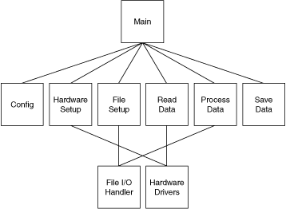
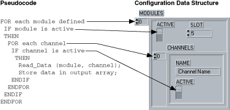
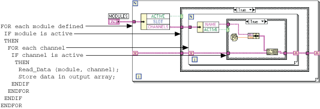
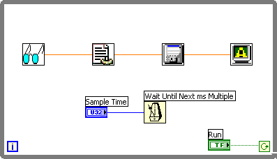

The block diagram programming metaphor LabVIEW uses is designed to be easy to understand. Most engineers already use block diagrams to describe systems. The block diagram makes it easier to convert the system block diagrams you create to executable code.
The basic concept is to divide the task into manageable pieces at logical places. Begin with a high-level block diagram that describes the main components of the VI. For example, you can have a block diagram that consists of a block for configuration, a block for acquisition, a block for analysis of the acquired data, a block for displaying the results, a block for saving the data to disk, and a block to clean up at the end of the VI.
After you determine the high-level blocks, create a block diagram that uses those blocks. For each block, create a new stub VI, which is a non-functional prototype that represents a future subVI. Create an icon for this stub VI and create a front panel with the necessary inputs and outputs. You do not have to create a block diagram for this VI yet. Instead, define the interface and see if this stub VI is a useful part of the top-level block diagram.
After you assemble a group of these stub VIs, determine the function of each block and how it works. Ask yourself whether any given block generates information that a subsequent VI needs. If so, make sure the top-level block diagram sketch contains wires to pass the data between the VIs. Select File�VI Properties and select Documentation from the Category pull-down menu to document the functionality of the VI and the inputs and outputs.
In analyzing the transfer of data from one block to another, avoid global variables because they hide the data dependency among VIs and can introduce race conditions.
Continue to refine the design by breaking down each of the component blocks into more detailed outlines. For example, you can fill out the block diagram of what was once a stub VI and then place those lower level stub VIs that represent each of the major actions the VI must perform on the block diagram.
Be careful not to begin implementing the system immediately at this point. You must refine the design gradually to determine whether you have left out any necessary components at higher levels. For example, when refining the acquisition phase, you might realize there is more information you need from the configuration phase. If you completely implement one block before you analyze a subsequent block, you might need to redesign the first block significantly. It is better to try to refine the system gradually on several fronts, with particular attention to sections that have more risk because of the complexity.
This example describes how you can apply top-down design techniques to a data acquisition system. This system must let the user provide some configuration of the acquisition, such as rates, channels, and so on. Then the system must acquire, process, and save the data to disk.
Start to design the VI hierarchy by breaking the problem into logical pieces. The following flowchart shows several major blocks you can expect to see in every data acquisition system.

Think about the data structures you need, and ask questions such as, �What information needs to accompany the raw data values from the Read Data VI to the Save Data VI?� The answer implies a cluster array, which is an array of many elements, of which each element is a cluster that contains the value, the channel name, scale factors, and so on. A method that performs some action on such a data structure is called an algorithm. Algorithms and data structures are intertwined. Modern structured programming reflects the usage of algorithms and data structures. Both work well in LabVIEW. This technique of programming is also suitable for pseudocode. The following illustrations show a relationship between pseudocode and LabVIEW structures.


Notice that the program and the data structure correspond in the first illustration.
Many experienced LabVIEW users prefer to use sketches of LabVIEW code. You can draw sketches of the familiar structures and wire them together on paper. This method is a good way to think things through, sometimes with the help of other LabVIEW programmers.
If you are not sure how a certain function will work, prototype the function in a simple test VI, as shown in the following block diagram. Artificial data dependency between the VIs and the main While Loop eliminates the need for a sequence structure.

Finally, you are ready to write the program in LabVIEW. Remember to make the code modular, building subVIs when there is a logical division of labor or the potential for code reuse. Solve the more general problems along with the specific ones. Test the subVIs as you write them. Testing can involve constructing higher level test routines. However, catching the problems in one small module is easier than in a large hierarchy of VIs.